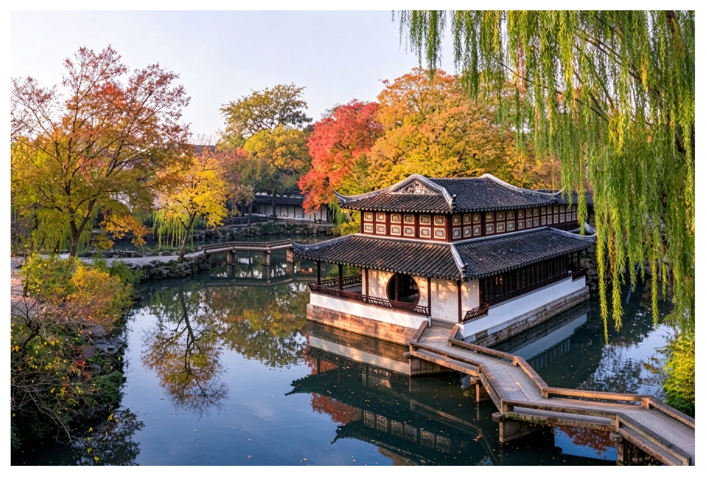

中国古典园林兴起于魏晋，成熟于明清。造园师借鉴山水画的构图，运用借景、框景、漏景等手法。

核心造园元素：亭台楼阁、假山、曲廊、漏窗、池水。漏窗如同画框，一步一景，把景色不断框入视野，如同连续的山水长卷。
遵循《园冶》“虽由人作，宛自天开”。追求天人合一，拒绝严格对称，模仿自然山水的起伏曲折，寄托文人隐逸、寄情山水的精神追求。
中国山水画采用散点透视，画家移动视点，把不同位置的景色整合到一张画卷。园林同理，游客边走边看，不断获得新画面，实现“移步换景”。很多园林本身还有配套题画，例如《拙政园三十一景图》，一园一画，互相呼应。
空间藏露交替，曲折迂回。利用假山、树木、廊道遮挡视线，先藏后露，营造含蓄悠远的意境，和国画留白理念相通。